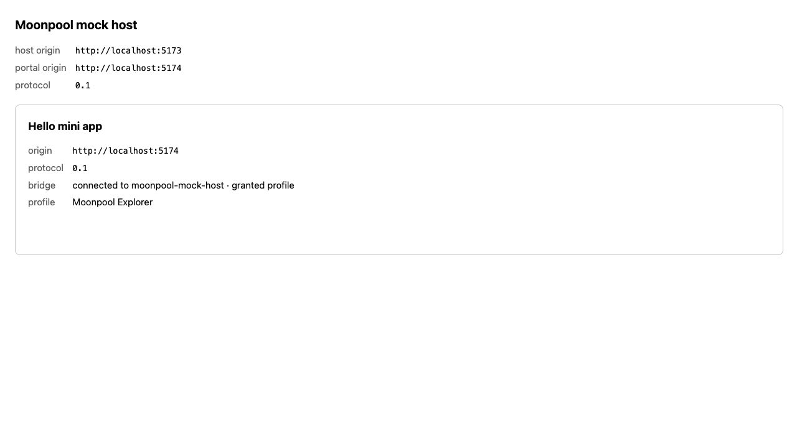

담당 함수를 연결하면,
이름이 화면까지 옵니다.
이미 만든 통신 통로에 프로필 담당 함수를 연결했습니다. 누가 이름을 준비하고, 누가 요청하고, 누가 화면에 쓰는지 코드를 따라 읽습니다.
전에는 연결 확인, 이제는 프로필 표시까지
전에는 호스트와 미니 앱이 연결됐다는 문구만 보였습니다. 호스트에 프로필 담당 함수가 없어서 profile.get을 요청하면 -32001, 즉 “이 호스트에서 기능을 제공하지 않음”이라는 오류가 나왔습니다.
이제 초기 연결을 끝내고 프로필을 요청하면, 호스트가 준비한 Moonpool Explorer를 미니 앱에 표시합니다. 실제 사용자 정보나 로그인 정보 대신 개발용 고정 이름을 사용합니다.

2026.10.22 실제 브라우저 검증 화면입니다. pnpm run dev 후 호스트의 http://localhost:5173/를 열면 같은 흐름을 확인할 수 있습니다.
새로 만나는 말
| 표현 | 뜻 | 비유 |
|---|---|---|
| provider | 호스트가 제공하는 실제 기능의 담당 함수 | 접수 후 일을 맡는 담당자 |
| handshake | 버전과 연결 정보를 먼저 확인하는 초기 대화 | 업무를 시작하기 전의 신분·언어 확인 |
| async | 결과를 나중에 전달하는 Promise를 반환하는 함수 표시 | 결과를 받을 수 있는 접수증 발급 |
| await | 결과가 준비될 때까지 현재 비동기 흐름의 다음 줄을 기다림 | 접수증의 완료 알림을 기다림 |
| textContent | 문자열을 HTML로 해석하지 않고 글자로 화면에 넣는 속성 | 안내판 문구로 붙이기 |
| unknown | 아직 어떤 형태인지 확인하지 않은 값 | 내용물을 확인하기 전의 상자 |
| 타입 좁히기 | 조건문으로 실제 형태를 확인해 사용할 수 있는 타입을 구체화하는 것 | 검사대를 통과한 내용에 확인 도장 찍기 |
| as ProfileGetResult · 이전 방식 | 실제 검사 없이 TypeScript에 결과의 자료형을 알려 주는 타입 단언 | 상자를 열지 않고 이름표만 붙이기 |
1 · 호스트에 프로필 담당 함수를 연결합니다
examples/mock-host/src/main.ts에서 createHost 설정에 추가한 부분입니다.
capabilities: {
// SPEC §6.3 / §9.4 / §9.5 — fixed public data, supplied asynchronously.
// Installing a provider does not bypass the kernel's profile scope check.
profile: {
async get() {
return { displayName: 'Moonpool Explorer' };
},
},
},capabilities는 이 호스트가 제공하는 담당 함수들의 자리입니다. 그중 profile.get을 요청받았을 때 실행할 get()을 넣습니다. 반환 객체의 displayName은 화면에 보여 줄 이름입니다.
고정 문자열이라 즉시 계산할 수 있어도 async를 붙입니다. 기능 호출은 항상 비동기라는 SPEC §9.5 약속을 지키기 위해서입니다. 나중에 실제 저장소나 다른 플랫폼에서 가져오는 방식으로 바뀌어도 통신 규칙은 유지됩니다.
grantedScopes: ['profile']은 출입증이고, capabilities.profile은 담당자입니다. 호스트는 출입증을 확인한 뒤 담당자를 부릅니다. SPEC §9.3의 권한 검사는 기존 커널이 수행합니다.2 · 요청은 이 순서로 이동합니다
초기 연결 완료
profile.get 요청
메시지 운반
권한·입력 확인
이름 반환
결과를 화면에 표시
미니 앱이 호스트의 함수를 직접 호출하는 것은 아닙니다. 요청 메시지를 보내면 호스트가 검사를 마치고 담당 함수를 호출합니다. 그 결과를 응답 메시지로 보내면 클라이언트가 기다리던 요청을 완료합니다.
// Request
{ "jsonrpc": "2.0", "id": 2, "method": "profile.get" }
// Response
{ "jsonrpc": "2.0", "id": 2,
"result": { "displayName": "Moonpool Explorer" } }id: 2는 초기 연결 다음 요청을 뜻하는 예시입니다. 요청과 응답의 번호가 같아서 어느 기다림을 끝낼지 알 수 있습니다.
3 · 초기 연결을 기다린 뒤 이름을 표시합니다
examples/hello-miniapp/src/main.ts에서는 먼저 이 줄이 끝납니다.
const result = await client.initialize();이 초기 연결은 서로 같은 버전의 약속으로 대화할 수 있는지 확인하는 절차입니다. 성공한 뒤에만 다음 프로필 요청을 보냅니다. await는 현재 흐름의 다음 줄을 기다리게 하며, 브라우저 전체를 멈추는 방식이 아닙니다.
const profileResult = await client.call(PROFILE_METHODS.GET);
if (
typeof profileResult !== 'object' ||
profileResult === null ||
Array.isArray(profileResult) ||
!('displayName' in profileResult) ||
typeof profileResult.displayName !== 'string'
) {
throw new Error('profile.get returned an invalid displayName');
}
profile.textContent = profileResult.displayName;PROFILE_METHODS.GET의 실제 값은 'profile.get'입니다. client.call이 응답을 받을 때까지 기다리고, 돌아온 객체에서 이름을 꺼내 profile 표시 자리에 씁니다.
처음에는 as ProfileGetResult로 호스트의 반환 계약을 신뢰한다고 표시했습니다. 2026.10.22 요청에 따라 이를 제거하고 실제 검사를 추가했습니다. 이제 화면에서 쓸 displayName을 확인한 뒤에만 표시합니다. 범용 call()의 반환형은 unknown을 유지합니다.
||는 조건 중 하나라도 참이면 실패라는 뜻입니다. 앞 조건이 참이면 뒤 조건은 평가하지 않습니다. 객체 여부를 먼저 확인하므로 숫자나 문자열에 in을 적용하는 일을 피합니다. 자바스크립트에서는 typeof null과 배열의 typeof도 'object'이므로 각각 따로 거절합니다.
'displayName' in profileResult는 해당 속성이 있는지 묻고, 마지막 typeof는 실제 값이 문자열인지 확인합니다. 이 실패 조건을 모두 지나면 TypeScript도 이름이 문자열임을 알기 때문에 as 없이 읽을 수 있습니다.
| 돌아온 결과 | 처리 |
|---|---|
| { displayName: 'Moonpool Explorer' } | 이름 표시 |
| { displayName: '' } | 빈 문자열도 문자열이므로 허용 |
| { displayName: 42 } | 숫자를 글자로 바꾸지 않고 오류 표시 |
| null · 배열 · 빈 객체 | 형태나 필요한 항목이 맞지 않아 오류 표시 |
이 검사는 화면에서 사용하는 displayName을 확인합니다. 사용하지 않는 avatarUrl이나 응답 전체의 스키마를 검증하는 함수는 아닙니다.
<img src="invalid" onerror="alert(1)">처럼 생겼어도 그대로 글자로 보여 줍니다. 이를 HTML로 해석해서 새로운 이미지나 실행 가능한 내용을 만들지 않습니다. 초기 연결로 받은 호스트 이름과 권한 문자열에도 같은 방식을 적용했습니다.4 · 연결 실패와 조회 실패를 구분합니다
반환값 검사에서 던진 오류도 기존의 프로필 catch가 처리합니다. 아래는 그 부분의 발췌입니다.
} catch (error) {
// A capability failure does not undo a successful handshake.
profile.textContent = `profile.get failed: ${describeError(error)}`;
}try는 실행해 볼 부분이고 catch는 실패했을 때 처리하는 부분입니다. 프로필 조회 실패를 안쪽에서 처리해서, 바깥의 연결 성공 문구를 지우지 않도록 했습니다.
| 상황 | 화면의 의미 |
|---|---|
| 초기 연결 대기 | profile: waiting for handshake... |
| 프로필 조회 중 | bridge는 연결 완료, profile은 loading... |
| 프로필 권한 없음 | bridge는 연결 완료, profile에는 -32000 오류 표시 |
| 프로필 담당 함수 없음 | bridge는 연결 완료, profile에는 -32001 오류 표시 |
| 초기 연결 실패 | bridge에 연결 오류 표시, profile 요청은 보내지 않음 |
| 이름이 없거나 문자열이 아닌 응답 | bridge는 연결 완료, profile에는 로컬 검사 오류 표시 |
describeError는 MoonpoolError의 번호와 메시지를 함께 보여 줍니다. 실패 원인이 달라도 모두 “연결 실패”로 보이게 만들면 문제를 찾기 어려워집니다.
5 · 테스트로 확인한 동작과 반환값 검사
최초 T02 구현 전에 새 테스트 7개가 실패하는 것을 확인했고, 구현 후 모두 통과했습니다. 예제 테스트도 정기 검증에 포함하도록 Vitest와 브라우저 타입 검사 대상에 추가했습니다. 처음 확인한 일곱 가지는 다음과 같습니다.
- 실제 mock-host 진입점이 프로필을 반환하고 권한은 profile만 부여하는가?
- 미니 앱이 초기 연결 후 profile.get을 요청하고 이름을 표시하는가?
- 초기 연결이 아직 끝나지 않았으면 프로필 요청을 기다리는가?
- 프로필·호스트 이름에 HTML 문자가 있어도 글자로 표시하는가?
- 권한 거절 -32000을 연결 성공과 구분해 표시하는가?
- 기능 미제공 -32001을 연결 성공과 구분해 표시하는가?
- 초기 연결 실패 시 오류를 표시하고 프로필 요청은 보내지 않는가?
반환값 검사 보완에서 테스트 11개를 더 추가했습니다. 잘못된 형태 10개가 검사 추가 전에는 실패하고 이후에는 통과했습니다. 나머지 하나는 빈 문자열이 계속 허용되는지 확인합니다. null·undefined·배열·누락된 이름·숫자·불리언 이름을 거절하고 연결 성공 문구는 유지하는지를 검증합니다.
최초 T02: 208개 통과 → 반환값 검사 보완 후 전체 219 / 219 통과 · 14개 테스트 파일
타입 검사·린트·두 예제 빌드 통과
최초 T02 실제 브라우저: 호스트 5173 → 미니 앱 5174 → Moonpool Explorer 표시 확인
보안 규칙 중 SPEC §9.3의 호스트 권한 검사, §9.4의 자격 증명 비노출, §9.5의 비동기 호출을 유지합니다. 전체 v0.1 보안 적합성을 모두 검증했다는 뜻은 아닙니다. T02 당시에는 저장소 provider가 없었고, 이후 T03에서 연결했습니다. 기본 연결의 storage 권한은 여전히 부여하지 않으며 화면에서 확인하는 구성은 T04에서 진행합니다.